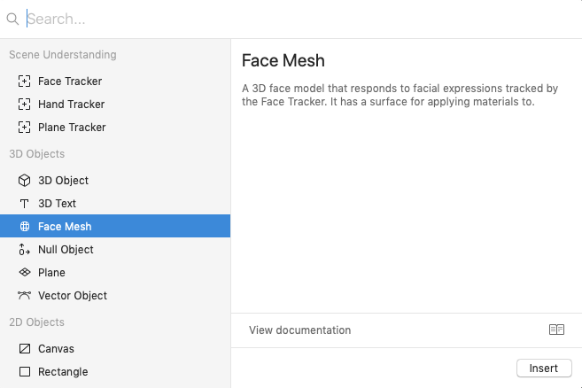

Step 1: First, make your asset in maya. You can make anything in maya and it will be brought into Spark AR, given that you do the following steps correctly. Please note that any animations or moving parts won’t cross over onto Spark AR, so you shouldn’t waste time and effort doing this.
Step 2: Click ‘File’ and then ‘Export’ and make sure to change the file type to FBX or OBJ. Next choose the destination for your asset. Desktop works just fine.
Step 3: Open Spark AR and then you can simply drag and drop your FBX or OBJ onto the ‘Assets’ tab, then onto your ‘Scene’ tab.
Step 4: Now you should be able to see your asset in your Scene, well done, you have successfully imported a 3D asset from Maya into Spark AR.
Step 1: Find the images you want to use. Be sure to rename them so they are all in order, e.g “image_01” … “image_02” … “image_03” etc. You can select as many images as you’d like.
Step 2: Add a face mesh by clicking ‘Insert’ in the top corner, then click 'face mesh'.
Step 3: Find your images, and highlight all of your images you want to use and tick the “sequence” box. This will import your images as a group. Now make sure you have 'default material' selected, this is the material of the facemesh. Then click on the drop down arrow from ‘Materials’ and then click ‘Texture Choose File’ on the left of the screen.
Step 4: Now you should be able to see your face mesh flickering with your images. You can change the FPS if you want, or you can add interactivity so that you change the image by tapping the face. If this is the case add the following commands in ‘Patch Editor’.
This is an example of a filter I made, combined with assets made in MAYA.
Here is a filter in use on the Facebook camera